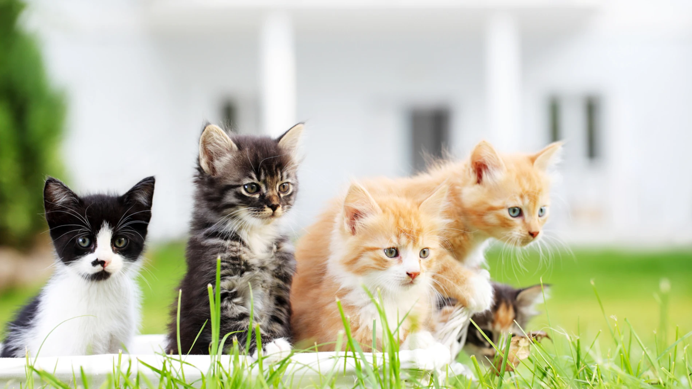

PurrCats
Cosas curiosas sobre los gatos
Felis Silvestris catus
El gato doméstico (Felis silvestris catus), llamado más comúnmente gato, y de forma coloquial minino, michino, michi, micho, mizo, miz, morroño o morrongo, y algunos nombres más, es un mamífero carnívoro de la familia Felidae. Es una subespecie domesticada, por la convivencia con el ser humano, del gato montés.

El nombre actual en muchas lenguas proviene del latín vulgar catus. Paradójicamente, catus aludía al gatos salvajes, mientras que los gatos domésticos eran llamados felis. Como resultado de mutaciones genéticas, cruzamiento y selección artificial, hay numerosas razas. Algunas, como la raza sphynx o la peterbald están desprovistas de pelo; otras carecen de cola, como los gatos de la raza bobtail o la manx, y algunas tienen coloraciones atípicas, como los llamados gatos azules.

El gato se comunica a través de vocalizaciones. Las más populares son su característico maullido y el ronroneo, pero puede aullar, gemir, gruñir y bufar. Además, adopta poses o expresiones que informan, a sus congéneres, sus enemigos o sus cuidadores, de su ánimo o sus intenciones. Junto con el perro, es el animal doméstico más popular, como mascota, como ayuda en la lucha contra roedores o ambas cosas.

Por su amplio abanico de presas potenciales, por su alta eficiencia como depredador, y por su elevado éxito reproductivo —especialmente si se suministra artificialmente alimento a las colonias sin tomar medidas adicionales para limitar su fertilidad— el gato doméstico está incluido en la lista de las cien especies exóticas invasoras más dañinas del mundo de la Unión Internacional para la Conservación de la Naturaleza.
Caracteristicas
Tamaño
Miden alrededor de 46 cm de longitud de la cabeza al cuerpo y entre 23-25 cm de altura; generalmente poseen una cola de unos 30 cm de largo (salvo mutaciones/malformaciones o razas como el Bobtail o el Manx). Los machos son más grandes que las hembras. El gato doméstico tiene un cráneo más pequeño y huesos más cortos que el gato montés europeo.

Peso
Generalmente pesan entre 2,5 y 7 kg; sin embargo, algunas razas como el Ragdoll y el Maine Coon pueden exceder los 11,3 kilogramos. Han existido casos que superaron los 23 kg de peso debido a la sobrealimentación.16 El sobrepeso es perjudicial para el animal y debe ser evitado a través de una dieta equilibrada y ejercicio físico, especialmente en aquellos ejemplares exclusivamente hogareños